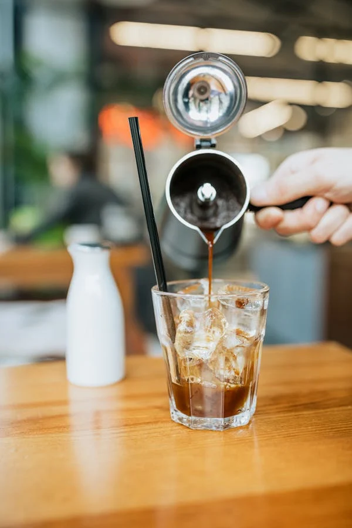

Café
Cappuccino
Don Juan Café tiene como objetivo principal la difusión de cafeterías y restaurantes para incrementar el consumo local, logrando que la derrama económica se quede en nuestra ciudad.Cuando compras en negocios locales apoyas la economía de tus vecinos, amigos o familiares emprendedores, lo cual genera empleo y desarrollo. Amamos Toluca y queremos verla crecer.
Descarga el menú WhatsApp